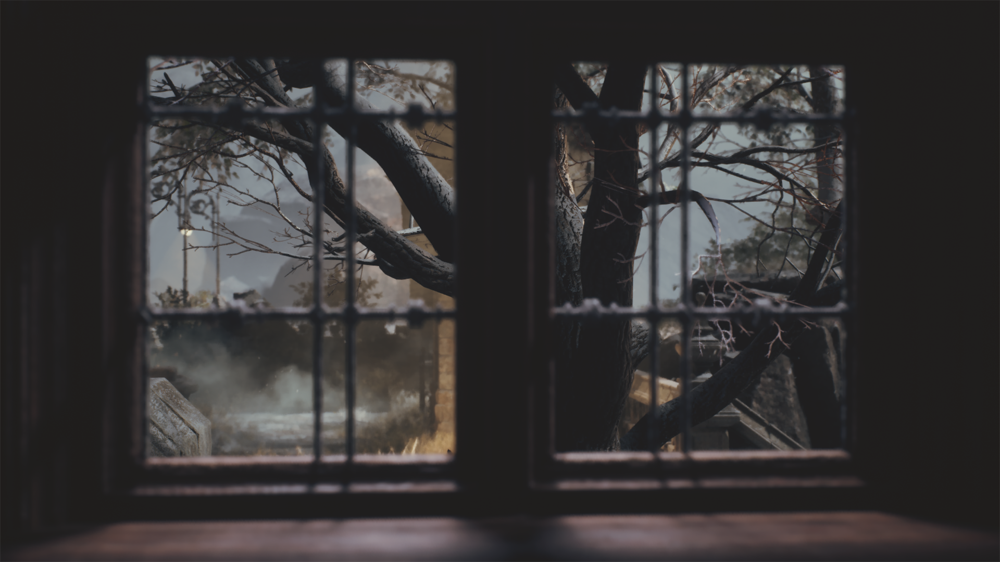
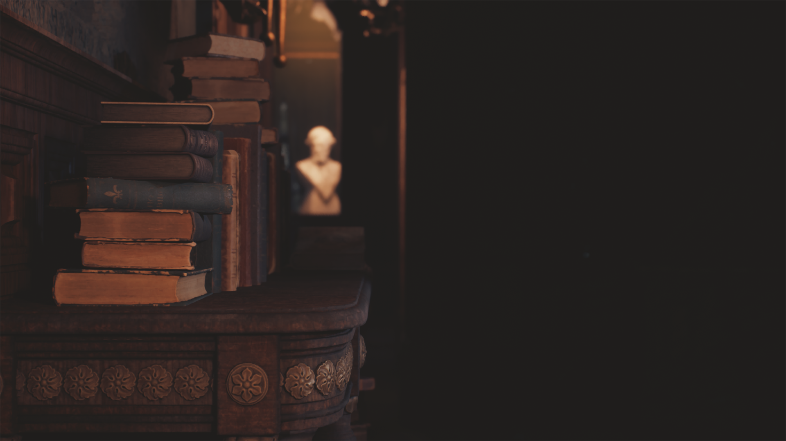

Lust
Some inspirations refuse to die.
Synopsis
A restorer is invited to a secluded manor beneath the winter sky.Each object carries the trace of a former muse, preserved long after love should have ended.Restore what remains, and uncover what the Pale Man could never bear to lose.
Within this tale

